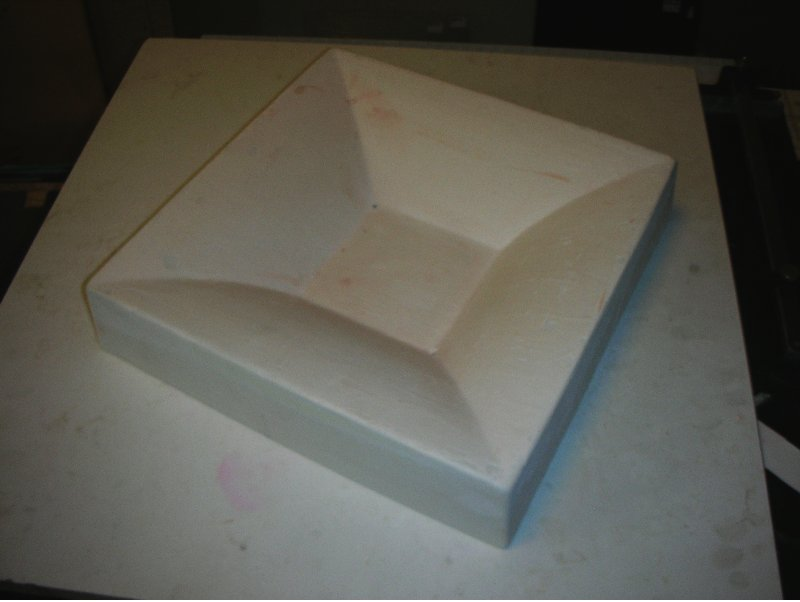
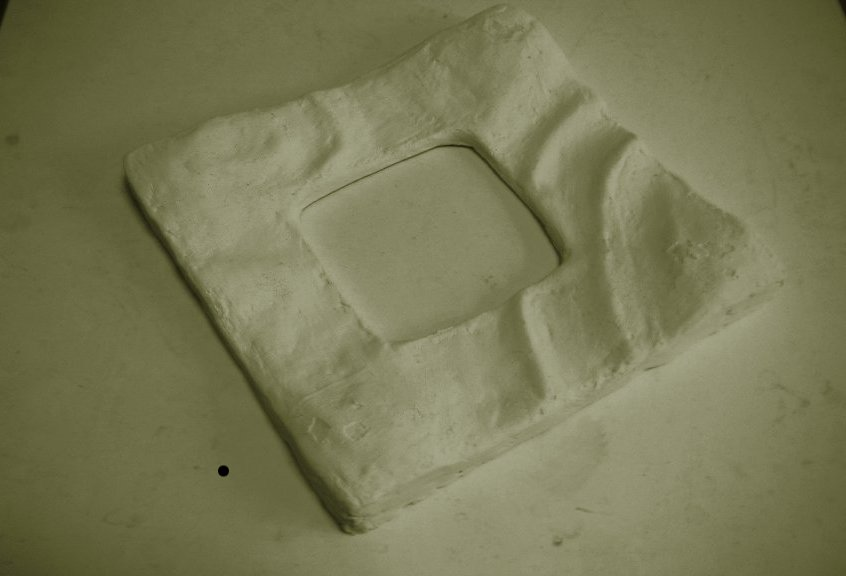
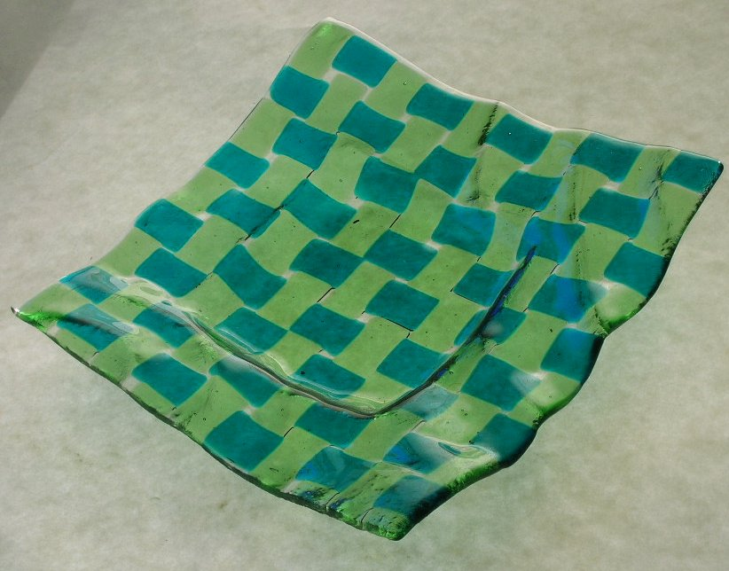

valmismuotti

valmismuottiin slumpattu valekudottu vati
omatekoinen muotti
omaan muottiin slumpattu valekudottu vati
|  valmismuotti |
valmismuottiin slumpattu valekudottu vati |
|  omatekoinen muotti |

omaan muottiin slumpattu valekudottu vati |
Valmismuotti on t‰sm‰llisempi, mutta mallin "kudonnaisuus" tulee paremmin esiin kun muotti korostaa sit‰. Ne eiv‰t erotu kuvassa mutta valmismuotin si‰nurkissa on 3 mm ilmarei‰t.
Kuvan muotti on keraaminen rengasmuotti, sen pohjana on uunilevy. Slumppauksen syvyytt‰ voi silloin s‰‰dell‰. Muotin reunat ovat turhan paksut ja aiheuttavat j‰‰hdytysongelmia. Ne olisi pit‰nyt veist‰‰ altap‰in ohuemmiksi kun savi oli nahkakuivaa.